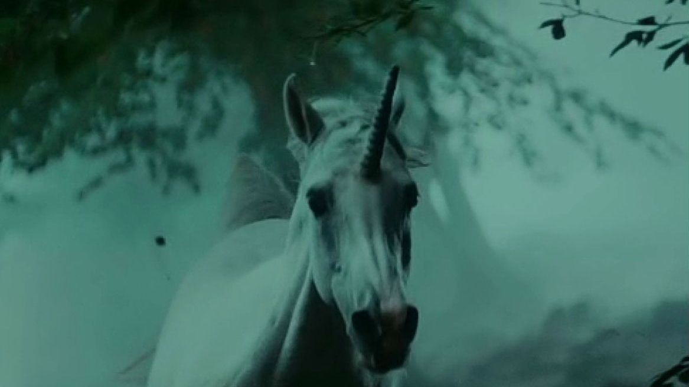

What is the Significance of the Unicorn?
When Deckard leaves his apartment with Rachael at the end of the film, she knocks over an origami unicorn. The unicorn is the last of a series of origami figures that Gaff uses to taunt Deckard. In Bryant's office when Deckard insists he's retired, Gaff folds a chicken: You're afraid to do it. Later he makes a man with an erection: You're attracted to her. And finally, the unicorn: You're dreaming, you can run away with her, but she won't live (he says something equivalent to Deckard on the rooftop). One interpretation is that the unicorn was simply a message to Deckard to say I know you've got Rachael, but I'll let her live. Another interpretation (based on the script) is that the unicorn is Gaff's gauntlet and he will hunt them both down.
A unicorn has long been the symbol of virginity and purity (being white), which ties in with Rachael's status. Legend states that only a virgin could capture a unicorn. Unicorns are extinct, and Gaff may think the same of Rachael, as she definitely has a limited lifespan.
A unicorn was used in Tennessee Williams' The Glass Menagerie to symbolize that the girl was "different to other horses". The horn on this unicorn represented her physical handicap, which prevented her from meeting people. When she finally did meet a man, they danced and knocked over the unicorn, breaking its horn off. "It's just like all the other horses now," she said, which symbolizes that she has overcome her shyness and lost her virginity.
The unicorn may also symbolize:
Rachael is (and always will be) a replicant among humans, and will be different, like a unicorn among horses, because of her termination date. (In the tacked-on ending, Deckard says that she doesn't have a termination date)
Rachael leaving and knocking over the unicorn symbolizes her escape from the Tyrell corporation, which only looked upon her as a replicant. Deckard fell in love with her as a human, and by doing so, she became human.
"The silver unicorn... is a made thing, a piece of human handiwork, beautiful and fragile and glittering, yet perceived as waste, thrown down and trodden upon, easily destroyed. Also, it is in the form of an animal, albeit a mythical one, and in the BR future, the beasts of the earth and fowls of the air are all extinct, except in replicant form. " - Rebecca Warner in Retrofitting Bladerunner
BRDC includes a scene not in the original release. It is a dream sequence, showing Deckard's dream of a white unicorn. One can now argue Gaff knew that Deckard had dreamt of a unicorn. If Gaff knew what Deckard was dreaming, then we can assume that Deckard was a replicant himself, and Gaff knew he would be dreaming of a unicorn just the way Deckard knew about the spider outside Rachael's window.
From The Blade Cuts, an interview with Ridley Scott:
Scott: ...did you see the version [of the script] with the unicorn?McKenzie: No...
Scott: I think the idea of the unicorn was a terrific idea...
McKenzie: The obvious inference is that Deckard is a replicant himself.
Scott: Sure. To me it's entirely logical, particularly when you are doing a film noire, you may as well go right through with that theme, and the central character could in fact be what he is chasing...
McKenzie: Did you actually shoot the sequence in the glade with the unicorn?
Scott: Absolutely. It was cut into the picture, and I think it worked wonderfully. Deckard was sitting, playing the piano rather badly because he was drunk, and there's a moment where he gets absorbed and goes off a little at a tangent and we went into the shot of the unicorn plunging out of the forest. It's not subliminal, but it's a brief shot. Cut back to Deckard and there's absolutely no reaction to that, and he just carries on with the scene. That's where the whole idea of the character of Gaff with his origami figures -- the chicken and the little stick-figure man, so the origami figure of the unicorn tells you that Gaff has been there. One of the layers of the film has been talking about private thoughts and memories, so how would Gaff have known that a private thought of Deckard was of a unicorn? That's why Deckard shook his head like that [referring to Deckard nodding his head after picking up the paper unicorn].
Scott goes on to talk about how he decided to make the photograph of the little girl with her mother come alive for a second, then later in the interview we have:
McKenzie: Are you disappointed that the references to Deckard being a replicant are no longer there?Scott: The innuendo is still there. The French get it immediately! I think it's interesting that he could be.
Scott intended the unicorn scene to be in the 1982 theatrical release, but the producers vetoed the idea as "too arty".
Written by Murray Chapman
Copyright Murray Chapman, 1998.
Cover art by an unknown artist — Get in touch with us if you know the creator.